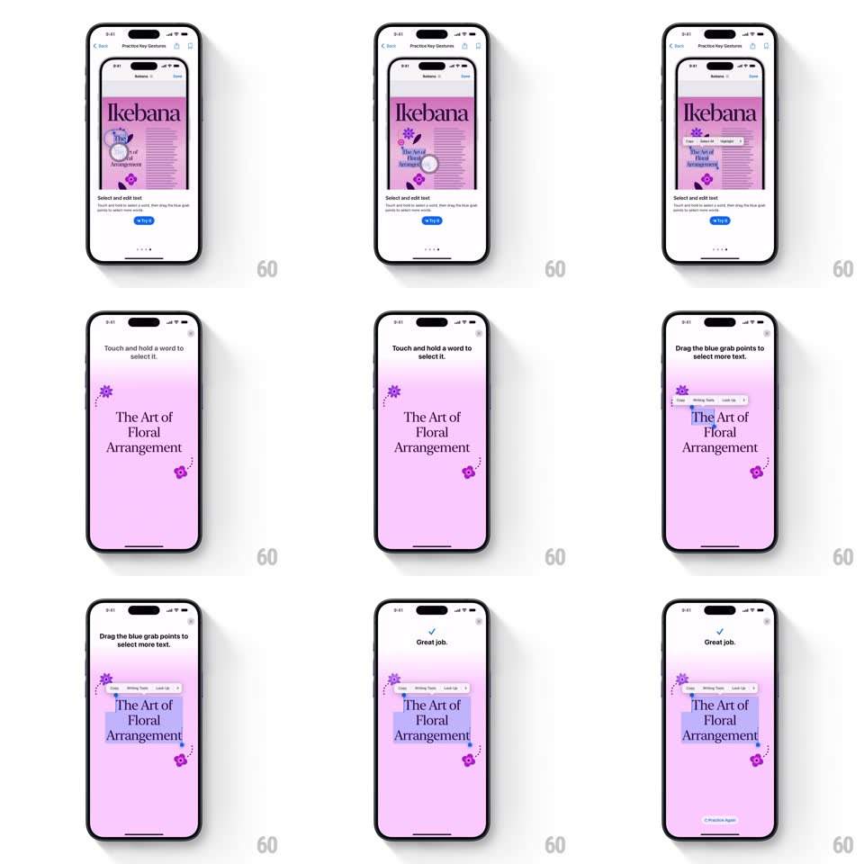

Media
Frame-by-frame

Rebuild this interaction 1:1: Apple's "Practice Key Gestures" text-selection tutorial - on a pink "Ikebana" article page, touch and hold selects a word with a loupe, then dragging the blue grab points extends the highlight across "The Art of Floral Arrangement" with a native edit menu (Cut, Copy, Look Up) above the selection.

Rebuild this interaction 1:1: Apple's "Practice Key Gestures" text-selection tutorial - on a pink "Ikebana" article page, touch and hold selects a word with a loupe, then dragging the blue grab points extends the highlight across "The Art of Floral Arrangement" with a native edit menu (Cut, Copy, Look Up) above the selection. ## Integration Integration: stack-agnostic spec - springs given as stiffness/damping, timed motions as duration + curve; map every value to your framework and animation library of choice. ## Scene White tutorial frame containing a miniature article page: pink background, "Ikebana" masthead, "The Art of Floral Arrangement" headline, body text. Instructions at top: "Touch and hold a word to select it." then "Drag the blue grab points to select more text." Success: check + "Great job." with a Practice Again link. ## Motion spec Pattern: guided text selection with loupe and grab points. - Touch-and-hold: after ~400ms, a circular magnifier loupe rises above the finger (~2x zoom, crosshair centered, spring-in ~200ms); on release the word highlights (system blue at ~30% opacity) with teardrop grab points at both ends. - Drag: the highlight extends live under the moving grab point, snapping to word boundaries with a subtle tick per word; the loupe reappears while dragging. - Selection menu: a dark pill (Cut, Copy, Paste / Look Up) pops in above the highlight (scale 0.9 -> 1, fade, 200ms) once the drag ends. - Selection clears with a 150ms highlight fade when the practice resets. ## Calibration - Word-boundary snapping is the native feel - the highlight never ends mid-word. - The loupe floats ~40px above the touch point so the finger never covers it. ## Reduced motion Selection applies without the loupe; highlight fades in (150ms); menu appears without scale. ## Don't miss - Grab points are blue teardrops hanging below/above the selection ends, not plain dots. - The article content is pink-themed with flower glyphs - the selection blue must read against it.